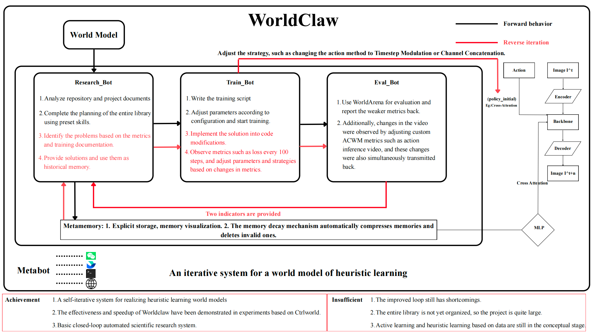
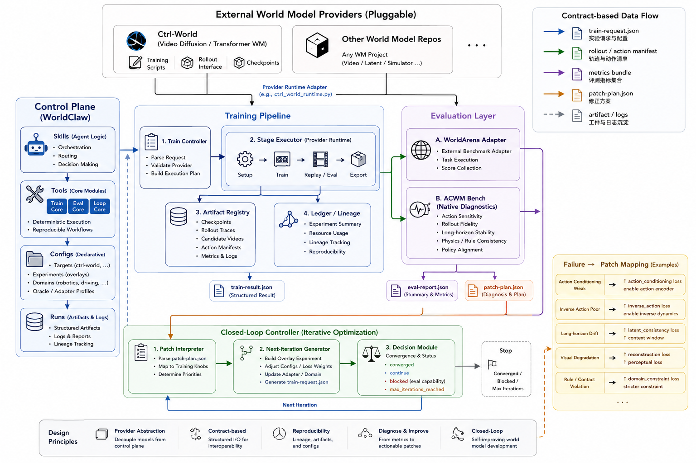

Train Surface
Training is organized around targets, experiments, staged execution, summaries, bundles, and lineage files under `runs/train/`.
WorldClaw is a repository for running train, eval, and closed-loop workflows around world-model projects, with targets, manifests, summaries, and patch plans kept in one place.
The current repository is centered on a small set of stable surfaces: `tools/train`, `tools/eval`, `tools/loop`, `configs`, and `runs`.
Training is organized around targets, experiments, staged execution, summaries, bundles, and lineage files under `runs/train/`.
Evaluation is split between `WorldArena` and `ACWM Bench`, with summaries, reports, and patch plans written under `runs/eval/`.
The loop layer connects train and eval through preflight, overlay experiments, `train-request.json`, `train-result.json`, and loop summaries.
This figure comes from the earlier project notes. It shows the first closed-loop view of WorldClaw around research, training, evaluation, and memory.

The workflow on this snapshot is: target + experiment -> train/export -> ACWM/WorldArena eval -> diagnosis/patch plan -> loop summary -> memory/report.
Resolve one target and one experiment into a concrete staged run.
Run training or replay and write checkpoints, logs, and summaries.
Export rollout, action, reference, and metrics files for evaluation.
Run ACWM or WorldArena and write summary, report, and patch-plan outputs.
Record the loop decision and the inputs needed for the next iteration.

train-request.json
Loop-to-train control payload with the exact staged objective for a given iteration.
train-result.json
Canonical bridge artifact that resolves training outputs into downstream evaluation inputs.
rollout-manifest.json
Sequence, camera, generated video, reference video, and horizon metadata for ACWM checks.
action-manifest.json
Explicit action binding metadata that lets evaluation reason about control fidelity instead of guessing.
metrics-bundle.json
Provider-exported or adapted metrics used by metric-backed ACWM suboptions and lightweight oracles.
patch-plan.json
Eval-facing remediation output that tells the next training iteration what to fix or regenerate.
Benchmark-facing evaluation, ACWM-specific checks, and repo-specific provider code are kept separate. That is the main boundary in the project.
External or score-oriented evaluation entry with suboptions such as video-quality, vlm-judge, jepa-similarity, and embodied-task.
Native diagnosis entry for action-sensitivity, rollout-fidelity, stability-guard, policy-alignment, and more.
Repo-specific knowledge lives in provider adapters, while the loop core stays generic and only consumes structured train/eval contracts.
Three-row replay from the Ctrl-World checkpoint comparison run. The clip is unlabeled in the raw export, so the row order is documented here.
The loop core should not know how one particular world-model repo stores weights, datasets, or rollout traces. That knowledge belongs in the provider boundary.
Provider adapters solve repository integration. Metrics adapters solve how heterogeneous rollout or score outputs are normalized into ACWM space.
Structure-complete exports already exist, but some metric-rich ACWM sidecars still need deeper backend integration before every diagnosis can be fully scored.
worldclaw/
skills/
train/
eval-worldarena/
eval-acwm/
papersearch/
report/
tools/
train/
eval/
loop/
providers/
papersearch/
report/
memory/
configs/train/
runs/
tests/
doc/
runtime/
metabot/
Workflow protocols that give each task family a stable first move.
Deterministic execution surfaces for train, eval, loop, paper search, report, and memory.
Config expresses intent, runs preserve evidence. That split is what makes the system reusable.
Regression coverage keeps the control plane from turning into undocumented shell state again.
Start from the commands below. They match the current repository layout.
Start with the control-plane dependencies before pulling in heavier training runtimes.
python -m pip install -r requirements-lite.txt
List supported evaluation entries and resolve a provider-adapted train run.
python tools/eval/main.py list-entries python tools/eval/main.py acwm list-suboptions python tools/train/run.py resolve-run ctrl-world \ --experiment-id smoke-train-eval --json
Use the loop controller instead of manually stitching training and evaluation together.
python tools/loop/run.py plan-acwm \ ctrl-world \ smoke-train-eval \ action-sensitivity \ --provider-id ctrl-world \ --preflight-profile smoke \ --json
`20260528T081046Z-acwm-bench-stability-guard` completed locally, with headline metric `horizon_compliance = 1.0`.
The repository already has working train, eval, provider-preflight, and loop entry points with structured outputs.
Metric-rich ACWM sidecars are still missing for some paths, and more provider adapters still need to be added.